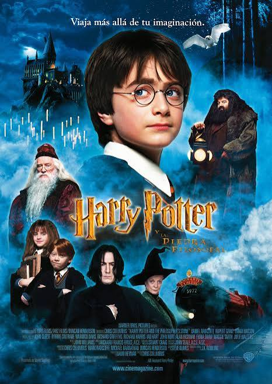
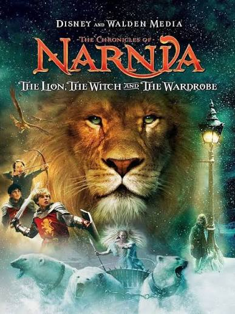
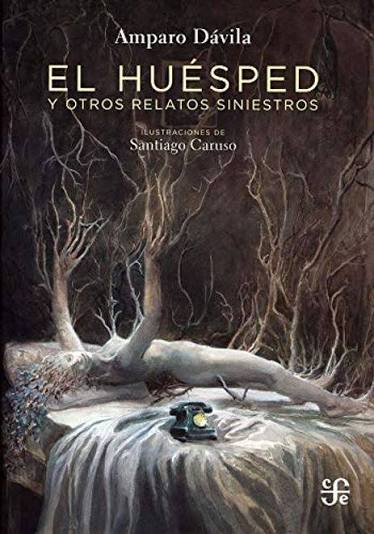

🪄 Magia y fenómenos extraordinarios
Presenta poderes, objetos encantados o acontecimientos que no siguen las leyes habituales de la naturaleza.
SUBGÉNERO NARRATIVO · 05
Entra en mundos donde la magia es posible, las criaturas extraordinarias cobran vida y las leyes de la realidad pueden cambiar por completo. Descubre historias que desafían los límites de la imaginación.
El subgénero narrativo fantástico presenta acontecimientos extraordinarios que desafían las leyes de la realidad. Puede incluir magia, criaturas imaginarias, mundos desconocidos o sucesos aparentemente imposibles. En la literatura fantástica, estos acontecimientos pueden provocar dudas sobre su explicación; en la fantasía, lo sobrenatural puede formar parte de las reglas del mundo narrado. En ambos casos, la imaginación es un elemento fundamental.
Presenta poderes, objetos encantados o acontecimientos que no siguen las leyes habituales de la naturaleza.
Puede desarrollar reinos, escuelas, territorios y escenarios que existen fuera de la realidad cotidiana.
Lo desconocido genera curiosidad, sorpresa o inquietud, especialmente cuando los personajes descubren algo inexplicable.
Selecciona una película o el cuento para conocer su ficha, sinopsis, personajes y elementos narrativos del subgénero fantástico.

PELÍCULAUn niño descubre que es un mago y comienza sus estudios en Hogwarts, una escuela llena de secretos, hechizos y aventuras.
VER FICHA COMPLETA →
PELÍCULACuatro hermanos descubren un mundo mágico al atravesar un misterioso ropero, donde los espera una aventura extraordinaria.
VER FICHA COMPLETA →
CUENTO LITERARIOUna mujer comienza a vivir aterrorizada cuando su esposo lleva a casa a una criatura misteriosa e inquietante.
VER FICHA LITERARIA →